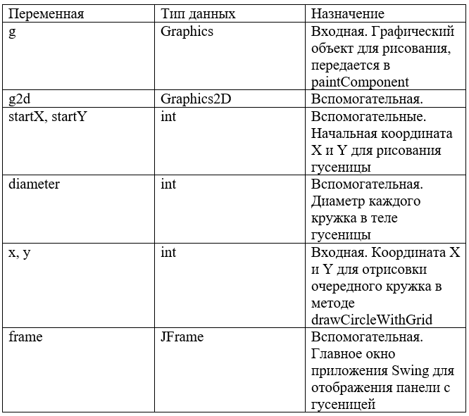

Задача 1
Ввести с консоли n-размерность матрицы a[n][n]. Задать значения элементов матрицы в интервале значений от -n до n с помощью датчика случайных чисел. Выполнить циклический сдвиг заданной матрицы на k позиций вправо (влево, вверх, вниз).
Задача 2
Создать классы, спецификации которых приведены ниже. Определить конструкторы и методы setTun(), getTun(), toString().
Определить дополнительно методы в классе, создающем массив объектов. В каждом классе, обладающем информацией, должно быть объявлено несколько конструкторов.
House: id, Номер квартиры, Площадь, Этаж, Количество комнат, Улица, Тип здания, Срок эксплуатации.
Создать массив объектов. Вывести:
а) список квартир, имеющих заданное число комнат;
б) список квартир, имеющих заданное число комнат и расположенных на этаже, который находится в заданном промежутке;
в) список квартир, имеющих площадь, превосходящую заданную.
Задача 3
Создать приложение, удовлетворяющее требованиям, приведенным в задании. Наследование применять только в тех заданиях, в которых это логически обосновано.
Аргументировать принадлежность классу каждого создаваемого метода и корректно переопределить для каждого класса методы equals(), hashCode(), toString().
Создать объект класса Звездная система, используя классы Планета, Звезда, Луна. Методы: вывести на консоль количество планет в звездной системе,
название звезды, добавление планеты в систему.
Задача 4
Создать класс Catalog с внутренним классом, с помощью объектов которого можно хранить информацию об истории выдач книги читателям.
Задача 5
В зависимости от признака (0 или 1) в каждой строке текста удалить указанный символ везде, где он встречается, или вставить его после k-го символа.
Задача 6
Выполнить задания на основе задачи № 3, контролируя состояние потоков ввода/вывода. При возникновении ошибок, связанных с корректностью выполнения математических операций, генерировать и обрабатывать исключительные ситуации. Предусмотреть обработку исключений, возникающих при нехватке памяти, отсутствии требуемой записи (объекта) в файле, недопустимом значении поля и т. д. Выполнить задания из задачи № 3, реализуя собственные обработчики исключений и исключения ввода/вывода.
Задача 7
Составить программу получения на экране рисунков.
Требуемое изображение по заданию 7
Задача 8
Построить иерархическое меню, в котором пробел будет открывать главное меню, а нажатием клавиши <Enter> будет разворачиваться подсвеченный пункт меню или, если пункт находится на самом нижнем уровне, нажатием клавиши <Enter> будет сворачиваться подменю. Нажатием клавиши <Esc> работа программы должна заканчиваться. Нижний уровень меню должен быть вертикальным.
Задача 9
Реализация Итальянской игры «Математико».
Ассемблер
Задача 10
1 Задание: N DQ ? ; число без знака
Не используя арифметические команды, реализовать оператор
(2 вариант) N := N div 2
Решение должно содержать не более трех команд.
2 Задание
Реализовать процедуру Padd(x.a), которая реализует оператор x:= x - a.